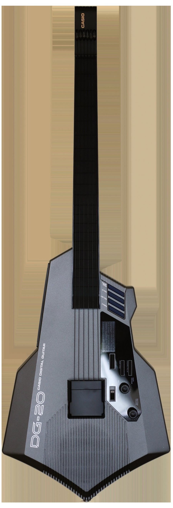

Casio DG-20 Digital Guitar
A rubber-string guitar whose membrane fretboard hardwires each fret to a pitch — no tracking, because there is nothing to track

Overview
The Casio DG-20 Digital Guitar (1987) is a MIDI guitar controller built for consumers. Instead of converting the vibration of plucked strings into pitch through signal processing — the slow, error-prone route of most MIDI guitars — Casio hardwired the instrument's geometry into the electronics. The fretboard is a rubber membrane switch matrix: pressing a string against a fret completes a circuit that is physically wired to a specific MIDI pitch, so fretting a note is a switch closure, not a pitch estimate. There is no tracking latency because there is no tracking — the instrument guarantees the pitch by construction.
The strings are nylon triggers; strumming them fires the fretted note. The DG-20 (and its non-MIDI sibling DG-10) aimed at hobbyists who wanted a synthesizer but did not want to learn a keyboard. It is the mass-market, membrane-switch end of the same idea as the museum's SynthAxe: the guitar as a MIDI input device.
Deep dive
Most MIDI guitars read pitch from a vibrating string and try to estimate the note, which introduces latency and errors. Casio's answer was to make each fret a switch — every fret contact on the membrane is electrically mapped to a specific pitch for each string. Fretting is not sensing, it is completing a circuit.
Because the pitch is hardwired to the geometry, there is nothing to compute. The instrument eliminates the entire pitch-detection problem by re-engineering the input surface so that intent is structurally guaranteed.
The rubber strings and membrane fretboard made the DG-20 approachable and cheap, but also distinctly toy-like compared to professional controllers — a commercially odd, mass-market instrument that nonetheless anticipated a whole family of "the hardware guarantees the input" devices.
Team & pioneers
- Casio Computer Co. Maker of the DG-20 Digital Guitar and the earlier DG-10.